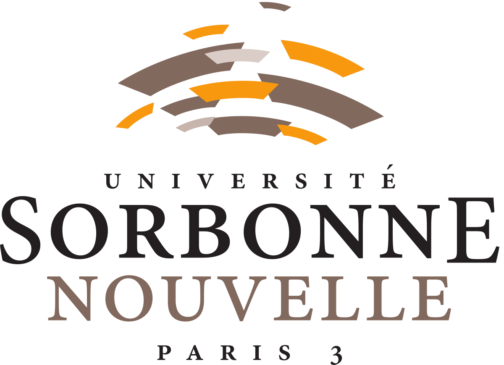
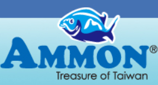

Who is this girl ?

Hi, my name is Laura. Welcome into my interactive resume. I am a 23 year-old parisian girl with chinese background. Currently, I am a Master student in Digital Marketing (in apprenticeship) at Institut-Mines Télécom Business School. I am also working as a Strategic and Digital Marketing Specialist for Flag Systèmes, a software publisher dedicated to the Tourism Industry. My passion is split between my love for amazing technology, travels, languages and sports. ! Thank you for stopping by my online profile and enjoy your reading :)
DOWNLOAD FULL CVEDUCATION 🎓
2017-2019: Institut-Mines-Télécom Business School
M2 Digital Marketing

2016-2017: New-Sorbonne University (Erasmus in Spain)
M1 International Business Negociation (English/Spanish)
2013-2016: New-Sorbonne University
Bachelor Degree in Modern Languages (English/Spanish)
PROFESSIONAL EXPERIENCE
Flag Systèmes: Strategic and Digital Marketing Specialist (still going on)
NMA Sanders: Marketing and Sale Assistant (2 months)

Ammon International INC.: Marketing and Sale Assistant (1 month)
Ballyneety Language Summer School: Marketing Assistant (2 months)
Labelle Poissonnerie (family-owned business): Sales Representative (7 years)
LANGUAGE
English: C1
Spanish: C1
Mandarine: B2
French/Teochew (Chinese dialect): Bilingual
Russian: A1
SKILL
Creative thinking
Communication
Teamwork
Ability to work under pressure
INTEREST